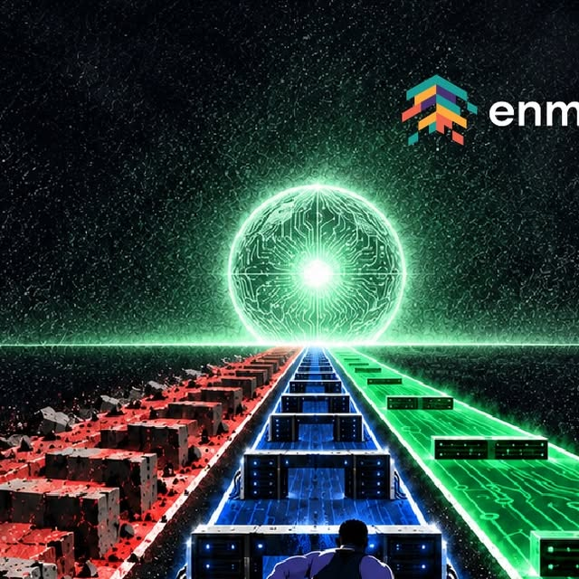

← Dashboard
Overview
Source: enmaeya (enmaeya.com) · click a sector to open it, click again to close · open as many as you like · data prototype
Lebanon Funding Network
News
‹
›
Resources
‹
›
Studio
‹
›
On Instagram

Latest from @enmaeya
View the post on Instagram ↗